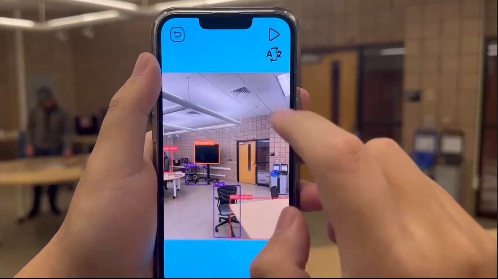

P3: Lingua AR
Description: Introducing Lingua AR, an AR mobile app that helps users learn a new language by translating objects in the real world.
Technical Components:
Unity: we use Unity as our coding platform to place object and set up interaction logic.
XCode: we use XCode as our compilation software to install software on iPhone.
Blend: we use Blend to adjust 3D model downloaded online (e.g. Sketchfab).
JIRA: we use JIRA as our project management system to distribute task and track progress.